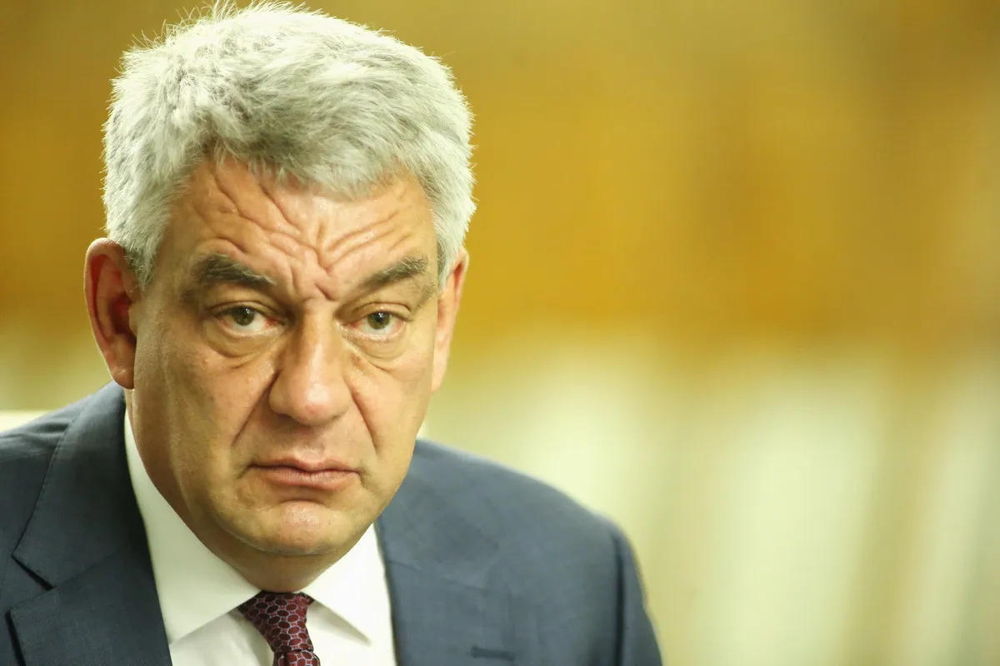

Mihai Tudose
Informații Personale
- Data Nașterii: 6 martie 1967
- Locul Nașterii: Brăila, România
- Naționalitate: Română
Controverse
- Accuzații de plagiat: În 2021, Mihai Tudose a fost acuzat de plagiat în teza sa de doctorat si 2 volume scrise. În urma investigațiilor, teza sa a fost retrasă de la publicare. Sursa
- Scandaluri Politice: În timpul mandatului său de prim-ministru, Mihai Tudose a fost implicat în mai multe scandaluri politice, care au dus la demisia sa din funcție.
- Acuzații de Corupție: În 2019, Mihai Tudose a fost implicat într-un scandal de corupție, fiind acuzat de luare de mită și abuz în serviciu. În urma investigațiilor, a fost achitat de toate acuzațiile.
- Alte Controverse: Mihai Tudose a fost implicat în mai multe alte controverse, precum hărțuirea sexuală, discriminare și abuz de putere. Sursa
- Declarații Controversate: Mihai Tudose a făcut mai multe declarații controversate pe parcursul carierei sale politice, care au stârnit critici din partea opiniei publice.
- Mafia Italiana Mihai Tudose a fost acuzat de colaborare cu mafia italiana pentru a obține fonduri europene.Sursa
- Scandaluri Personale: Mihai Tudose a fost implicat în mai multe scandaluri personale, precum divorțuri, relații extraconjugale și probleme de sănătate.
Activități Politice
- 02/07/2019 – prezent : Membru al Parlamentului European. Membru în Grupul Alianței Progresiste a Socialiștilor si Democraților, Comisia pentru comerț internațional, Comisia pentru afaceri constituționale și Delegația la Comisia parlamentară de asociere UE-Moldova. Membru supleant în Comisia pentru afaceri economice și monetare, Comisia pentru industrie, cercetare și energie, Comisia specială privind ingerințele externe în toate procesele democratice din cadrul Uniunii Europene, inclusiv privind dezinformarea și Delegația la Comisia parlamentară mixtă UE-Macedonia de Nord.
- 01/2018-06/2019 : Deputat în Parlamentul României, membru al Comisiei pentru politică economică, reformă și privatizare
- 06/2017-01/2018 : Prim-ministrul României
- 02/2017-06/2017 : Ministrul Economiei
- 12/2015-02/2017 : Deputat în Parlamentul României, Președinte al Comisiei pentru politică economică, reformă și privatizare
- 12/2014-11/2015 : Ministrul Economiei, Comerțului și Turismului
- 2004-2014 : Deputat în Parlamentul României, Președinte al Comisiei pentru politică economică, reformă și privatizare
- 2012-2019 : Președinte al Grupului parlamentar de prietenie cu Republica Federală Germania
- 2008-2012 : Președinte al Grupului parlamentar de prietenie cu Republica Elenă
- 2000-2004 : Deputat în Parlamentul României, membru al Comisiei pentru politică economică, reformă și privatizare
- 1999-2000 : Consilier juridic / marketing – SC Farex S.A. Brăila
- 1992-1999 : Șef birou senatorial – Senatul României
Educație
- 2013 : Conferențiar universitar: „Protecția infrastructurilor critice”; „Securitate națională și euroatlantică” – Academia Națională de Informații „Mihai Viteazul”, Serviciul Român de Informații
- 2013 : Adeverință de certificare pentru profesia didactică – monospecializare, Universitatea Națională de Apărare „Carol I” – Departamentul de management militar și de pregătire a personalului didactic
- 2011 : Lector universitar: „Protecția infrastructurilor critice”; „Strategii de securitate și apărare” – Academia Națională de Informații „Mihai Viteazul”, Serviciul Român de Informații
- 2010 : Doctor în domeniul Științe Militare și Informații: „Protecția infrastructurilor critice” – Academia Națională de Informații „Mihai Viteazul”, Serviciul Român de Informații
- 2008 : Master „Turismul în contextul dezvoltării regionale durabile” – Facultatea de Management, Inginerie Economică în Agricultură și Dezvoltare Rurală, Universitatea de Științe Agronomice și Medicină Veterinară București
- 2007 : Cursuri postuniversitare „Relații internaționale și integrare europeană”, Institutul Diplomatic Român, Ministerul Afacerilor Externe
- 2007 : Curs de specializare în „Analiza și rezolvarea conflictelor armate” – Georgetown University, Statele Unite ale Americii în colaborare cu Colegiul Național de Apărare
- 2006-2007 : Curs postuniversitar „Managementul comunicării și relații publice”, Facultatea de Științe Economice – Universitatea Dunărea de Jos, Galați
- 2006-2007 : Master, „Politici Economice Europene”, Școala Națională de Studii Politice și Administrative – București
- 2006 : Curs de specializare postuniversitar, Colegiul Național de Apărare – București
- 2006 : Curs de specializare pentru cadre de conducere (SES), Centrul European Marshall pentru Studii de Securitate Națională – Garmisch, Germania
- 2006 : Curs postuniversitar în domeniul securității naționale, Colegiul Superior de Securitate Națională, Serviciul Român de Informații
- 2001 : Curs postuniversitar, „Management și gestiunea afacerilor”, Facultatea de Științe Economice – Universitatea Dunărea de Jos, Galați
- 1991-1995 : Facultatea de științe juridice și administrative, U.C.D.C. București
Experiență Profesională
- Nu